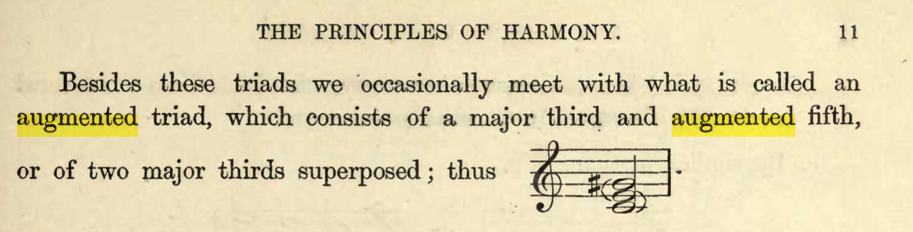
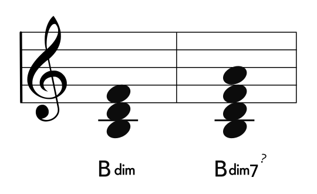
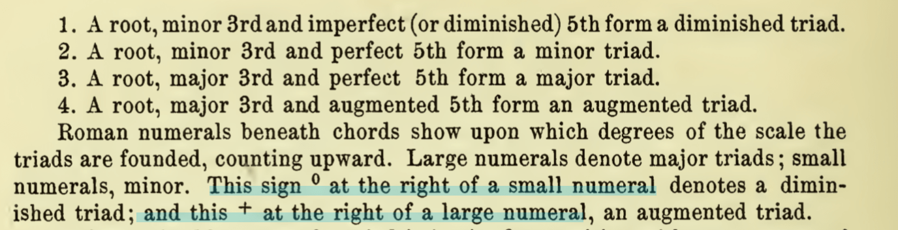

在过去几讲中，我们接二连三地介绍了许多崭新的和弦。本篇是一次回顾与总览。此前的各讲以介绍经典的级数用法与听觉声响为主，而在这里，我们将横向对比构成音、梳理形形色色的别名与替代记法，从宏观上全面把握知识体系的整体全貌。
 1. 五线谱上的横向对照
1. 五线谱上的横向对照
首先我们通过五线谱，将此前介绍过的和弦做一次集中盘点。
三和弦家族

由于许多特殊变种和弦常用于V级上，这里统一以G为根音进行示范。 在实际运用中重要度稍次的形式加了括号。归结起来，最核心、最不可或缺的正是：sus4、升五度（♯5）、小减五度（m(♭5)）这三位。彻底摸清其构造逻辑的今天，面对这些和弦名称大家想必早已不再犯怵。 各个和弦的核心要点总结如下：
| 和弦 | 经典级数 | 核心特征概要 |
|---|---|---|
| sus4 | I, V, VI | 缺少三音（3rd），向上挂留悬吊的声响带来悬念张力 |
| (♯5) | I, V | 扩张的独特音程间距赋予其奇妙戏剧性的氛围 |
| m(♭5) | VII, II | 内部三的浑浊摩擦营造出动荡不安的情绪 |
四和弦家族

四和弦的排列组合非常多，这里只精选提炼了在实战中具有高实用价值的核心形态。理论上当然还存在诸如小重大七升五和弦（mM7(♯5)）或大七sus2等形态，这些完全可以凭借模块化零件组合的逻辑自行推演。 乍看之下“Δ7sus4”与“7sus4”的区别似乎令人眼花缭乱，但本质无非就是“Δ7”与“7”在七度音上的老生常谈，属于我们在第II章中早已攻克的关隘。无论是和弦名称还是声响质感，只要将其拆解为“底层基础和弦品质”＋“变音修饰”，一切都会迎刃而解。 唯独“dim7”在名称字面上没有给出详细的音程提示，这就需要我们下功夫牢牢记住其内部结构：“全员相隔[3个]（小三度）等间距排列”以及“坐拥两对三全音”，正是记忆dim7的核心抓手。
变异维度的种类出奇得精炼
虽然在此之后还有“斜线和弦”与添加延伸音的“张力延伸和弦”两大领域等待探索，但通过改变音符所创造的变音和弦变体，归纳起来其实就只有这么多！无非是在4种基础七和弦的基础上，对五音进行微调挪移、对三音进行微调挪移，全是一套严密优雅的组合数学逻辑。

2. 形形色色的别名与历史渊源
然而，真正让和弦记号显得扑朔迷离的，其实是从这里开始的现实问题：每一个和弦都存在着大量的别名与替代书写格式！随着时代变迁与流派分歧，不同的记谱习惯应运而生；一旦在历史上被广泛使用，就很难再被强行彻底统一。这种繁复的记号方言，正是造成和弦名称令人困扰的真正症结所在。 本节将带大家彻底理清变音和弦各种记法的前世今生。
加号（+）与减号（-）
首先从最容易理解的讲起。针对升五度（♯5）与降五度（♭5），音乐界普遍存在使用“+”代替♯、使用“-”代替♭的书写习惯。

毕竟手写或排版升降号较为繁琐，符号便逐渐走向了简写。升高音程用加号（+），降低音程用减号（-），直观而明确。本站在后续的进阶内容中，也会较多采用这种清爽的正负号记法。
aug 与 dim
接下来看三和弦。在涉及五度变音的和弦中，“大和弦的升五度”与“小和弦的降五度”自古典主义时期起就享有非同寻常的核心地位。正因如此，它们早在现代体系成型前就被赋予了专属的古典名称——增和弦（Augmented Chord）与减和弦（Diminished Chord）[8]。

它们的和弦缩写分别为“aug”与“dim”。大、小、增、减——将这四者视作“四大基础三和弦”是古典和声学的传统观念，许多流行乐理书籍也沿袭了这一分类架构。 “增和弦”与“减和弦”的历史远比现代和弦标记制度悠久得多。它们是历经几个世纪沉淀的前辈，而“升五度/降五度”则是后来为了追求系统化规则而创造的现代逻辑术语。

F. A. GORE OUSELEY “Principles of Harmony” 第11页 (1868)“augmented（增）”与“diminished（减）”我们在详细音程中早已见过，分别代表音程性质中的“增”与“减”。升五度是因为五音变成了增五度，所以称为增和弦（aug）；降五度是因为五音变成了减五度，所以称为减和弦（dim）。 在钢琴卷帘窗上一目了然，这四位成员依次相差半音步步紧扣：

可以形象地理解为：比大三和弦更明亮挺拔的是aug，比小三和弦更幽暗压抑的是dim。 在英语中，“augment”本意就是“增加、扩张”，“diminish”本意就是“缩小、削减”，了解其词源有助于深刻记忆。
增和弦与七度音的结合
既然如此，升五度（♯5）的七和弦版本，自然也会顺理成章地冠以aug的别名：

分别对应“增大大七和弦（Augmented Major Seventh）”与“增属七和弦（Augmented Seventh）”。理解了前面的脉络，这里的命名逻辑完全水到渠成。
减和弦与七度音的结合
小减五度和弦的别名是“dim”。回想上一讲，我们学习的那个全能怪物和弦的名字正好叫“减七和弦（Diminished Seventh）”。其实这个名字的本义，正是源于“为减三和弦加上七度音”的构思。

在小减五度（dim）三和弦之上，轻轻放上一枚减七度音，便诞生了减七和弦（dim7）。
等等，是不是忘了谁？
但是仔细推敲一下，似乎隐隐觉得哪里不对劲…… 既然“减和弦（dim）”是小减五度的代称，那么提到“把小减五度七和弦化”，我们此前最先认识的难道不是“小七减五和弦（m7(♭5)）”吗？


按照七和弦的通用命名公理——“叠重大七度写成Δ7，叠置小七度写成7”，严格按照这套现代规则推导，“小七减五和弦”理所应当被冠以“减七和弦（dim7）”的称号才对啊！

为什么唯独在这里，整个命名系统的逻辑一致性轰然坍塌了呢？背后当然有着任何人都无法反驳的坚实理由： 因为，全世界早在大几百年前就是这么叫的了。

什么嘛！这根本不能让人信服好吧？！

古典乐理论
老子在连“和弦名称”这概念都还没发明的年代，管这个减七度叠置就一直叫Diminished 7th好不好！老子这么叫了一百多年了！

爵士乐理论
咳……一百多年的老传统，确实谁也掀不动啊……
正如前文所述，减七和弦是“特殊和弦界的绝对王者”，早在1800年前后的古典理论文献中，其超凡脱俗的独特性就备受瞩目，并被正式确立为“Diminished Seventh”。在那个时代，人们甚至根本还没有“给所有和弦制定统一规律命名系统”的意识[9]。 至于“叠置大七度就叫Major 7th”这类规整的现代和弦命名法则是很久之后才制定的，面对既成事实，现代系统只能向深厚的历史传统低头妥协。
半减七和弦（Half-Diminished）
那么，最委屈的自然就是被剥夺了本位命名权的小七减五和弦了：

我们重新审视一下构成音：在真正的减七和弦（dim7）中，五度与七度都是“减音程”；而在小七减五和弦中，只有五度是“减”，七度却只是普通的“小七度”。

既然它的“减”程度只有正牌减七和弦的一半，理论家们便宽慰性地赐予了它一个全新的爱称——半减七和弦（Half-Diminished Seventh）[10]。

虽然略带权宜之计的色彩，但归根结底，音乐理论正是由开发者与使用者在数百年漫长岁月里共同研磨妥协而成的产物。由人类历史约定俗成的文化，注定不可能像代码那样拥有百分之百的机械系统美感。
进一步符号化记号的演变
虽然赋予了aug与dim这些优雅的雅称，但要在乐谱上密密麻麻地手写或印刷这些英文字母，在早期的印刷排版技术下其实极为费力。于是和声学家们又引入了更简洁纯粹的抽象符号——加号（+）与小圆圈（o）。

这种符号化在美观度上显著优于一长串字母。不过相比aug/dim能直观联想英文单词，圆圈符号对初学者来说略显抽象。这一记法在19世纪的文献中便已屡见不鲜，或许正是受限于当时的铅字印刷条件，才倒逼出了这一记号化创举：

Stephen A. Emery “Elements of Harmony” 第12页 (1879)如果增和弦用加号（+），减和弦本应顺理成章用减号（-），但当时很可能是考虑到了印刷墨水磨损与视认性防伪。观察文献中的符号，比起常规圆圈更像是上标的“0次方”。在没有计算机排版的年代，前人“想方设法找现有铅字符号凑活排版”的艰辛跃然纸上。
七和弦中的加号与圆圈系统
这套加号与圆圈符号体系同样无缝适用于七和弦。而对于刚才提及的“半减七和弦”，正如其名，直接采用了把减和弦的圆圈一刀劈成两半的符号（斜杠圆圈）：

半减七和弦的记号在现代电脑排版中通常使用希腊字母“φ（Phi）”或北欧字母“ø（带有斜杠的O）”来输入。而减和弦的圆圈，有人输入常规圆圈“○”，但在英语圈中更多使用小写字母“o”、温度度数符号“º”，或是将其写为上标大写“ᴼ”。
3. 极简主义引发的新困扰：省略数字“7”
更令人头疼的是，在“Δ、o、ø”这三位符号代表中，爵士乐界经常出现直接省略数字“7”的简略写法[11]。

这大概是因为在“七和弦是天经地义出厂设置”的爵士乐环境中，音乐家们觉得每次都写个7纯属多余，索性就将其彻底省略了。在古典乐理论中是绝无此种思维的。虽然这谈不上全球通用规范，但在许多纯正爵士手稿或铅字谱中，这种默认省略7的现象屡见不鲜。 不仅如此，连英文字母版的“dim”，很多时候在流行或爵士乐手笔下也直接代表着四和弦的减七和弦（dim7）。
dim 究竟是三和弦还是四和弦？
这就引出了一场巨大的现实语义分歧：“dim”或“o”到底是指三和弦还是四和弦，在不同人笔下是完全不一样的！

总体趋势是：古典背景越浓，它越倾向于指代三和弦；爵士与流行色彩越强，它越倾向于默认指代四和弦。然而这绝非金科玉律。在与其他音乐人跨界协作沟通时，必须对这一潜在歧义保持高度敏锐。
杜绝任何歧义的绝对严谨表达
如果你希望在交流中百分之百避免任何误会，最无可辩驳的叫法是：三和弦一律称为“小减五和弦（m(♭5)）”，四和弦一律称为“减七和弦（dim7）”。这样对方绝无可能发生理解偏差。

不过当别人递给你一份赫然写着“dim”的乐谱时，依然需要结合前后乐段与音乐流派做出清醒明智的审视。
4. 记谱格式全盘总览
至此我们已经将市面上所有的记法变体尽数梳理。在此我们将各种流派的记法汇总为对照大表。“大三和弦＝无记号”与“属七和弦＝7”由于在全宇宙流派中都完全统一，在此仅对比其余变化部分：
| 风格倾向 | min | aug | dim | M7 | m7 | mM7 | dim7 | m7(-5) | 7(+5) |
|---|---|---|---|---|---|---|---|---|---|
| ①朴素直白 | m | (♯5) | m(♭5) | M7 | m7 | mM7 | dim7 | m7(♭5) | 7(♯5) |
| ②正负号 | 〃 | (+5) | m(-5) | 〃 | 〃 | 〃 | 〃 | m7(-5) | 7(+5) |
| ③aug/dim文字 | 〃 | aug | dim | 〃 | 〃 | 〃 | 〃 | m7(-5) | aug7 |
| ④符号化特化 | – | + | o | Δ7 | -7 | -Δ7 | o7 | ø7 | +7 |
| ⑤省略数字7 | 〃 | 〃 | m(♭5) | Δ | 〃 | -Δ | o | ø | 〃 |
当然在现实中，这几种记法往往会局部交融共存。例如本站对于大七和弦偏爱使用“Δ”记号，但为了避免把小和弦写作“-”导致视认不清，依然坚持使用清晰的“m”。 即便在同一学术门派内部，记法出现微调也屡见不鲜，并没有哪一种流派占据绝对权威的霸主地位。进阶爵士理论倾向于第④种的高度符号化，而通俗流行理论则更偏爱第①种浅显易懂的表述。能根据沟通对象的背景自如切换，才是最成熟的做法。 正如我们在导论中所言，音乐理论本质是用来将抽象听感转化为语言的工具；正因它是语言，产生如此多的“方言”实属自然必然。应当感到庆幸的是：跨越了数百年时光与不同国度，核心分歧竟然能收敛在这样一个有限的范围内，这本身就已经是一场奇迹了！
本站采用的基准记法
作为基本原则，本站在后续文章中主要采用如下记号规范：
| min | aug | dim | M7 | m7 | mM7 | dim7 | m7(-5) |
|---|---|---|---|---|---|---|---|
| m | + | m(-5) | Δ7 | m7 | mΔ7 | o7 | ø7 |
整体略偏重符号化，兼顾视认性与书写简洁。手写与电脑排版环境下最优解各有千秋，不必过度执拗于孰优孰劣。
5. 键盘上的和弦全景图
方才我们用五线谱做了盘点，但对于音程关系错综复杂的认知而言，在键盘上俯瞰往往更具空间直观性。以下是为大家整理的键盘全景矩阵：

为了保持版面清晰，略去了sus2以及大调降五等边角形态。这张横纵网格的价值在于：和弦构成的基础零件真的非常有限。正如前文所强调的，只要理解了各零件在网格中的排列组合，就能彻底看穿任何看似艰深的和弦。 切记：比起机械背诵零件公式，将和弦与经典的级数走向及听觉声响捆绑领会，才是让理论转化为“鲜活创作力”的唯一康庄大道。
总结
- 变化系和弦在漫长的音乐历史演进中被赋予了极为丰富的代称与替代记法。
- aug被赋予了“+”、dim被赋予了“o”、小七减五和弦被赋予了“ø”的专属符号。
- 爵士乐中存在省略数字“7”的省写习惯，需留心与常规三和弦的潜在混淆。
- 各套记法各有利弊，熟练辨析并在交流中灵活适配是关键素养。